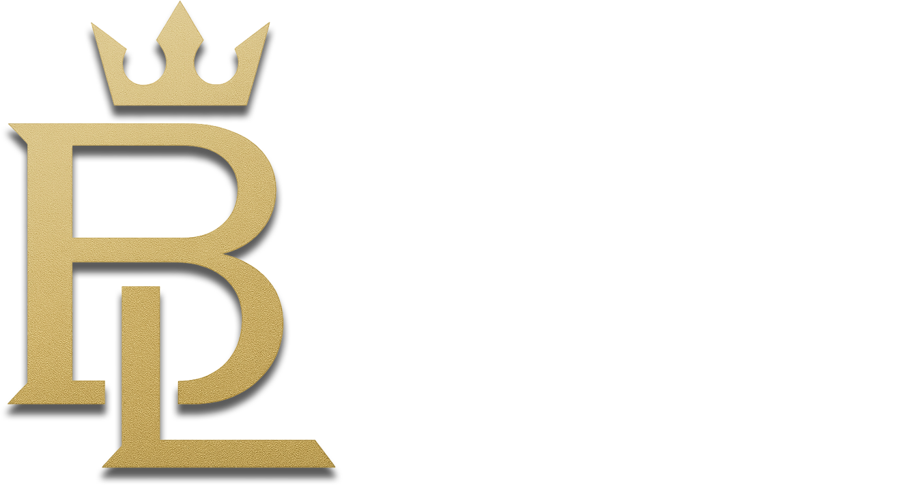

About Beauty Leaders
An independent media initiative in aesthetic medicine
Beauty Leaders was created to make space for conversations that respect science, professional responsibility and the human dimension of aesthetic medicine.
What Beauty Leaders stands for
Beauty Leaders is not built as a promotional catalogue or a trend-driven content stream. It is a media initiative that seeks deeper, more meaningful dialogue with physicians and experts in aesthetic medicine.
Its central aim is to move beyond superficial discussion and bring forward thoughtful conversations about clinical judgment, ethics, patient dignity, professional identity and the lived realities behind medical aesthetics.
Our mission
We believe progress in aesthetic medicine should remain connected to knowledge, conscience and respect for human dignity. For that reason, Beauty Leaders is guided by three recurring pillars: scientific understanding, human dignity and professional responsibility.
Core principles
What shapes our editorial direction
- Respect for evidence and uncertainty
- Meaningful conversation rather than sensationalism
- Recognition of the physician as a human being, not only a public image
- Transparent distinction between editorial activity and commercial interests
- Openness to international dialogue without diluting local identity

Positioning
Built for international legibility
The platform is based in Iran, but its outlook is international. Its visual language, bilingual structure and editorial positioning are intentionally designed to support credible engagement with global physicians, scientific congresses and institutional partners.
At the same time, Beauty Leaders preserves its independent voice and avoids claiming affiliations or partnerships that have not been formally established.